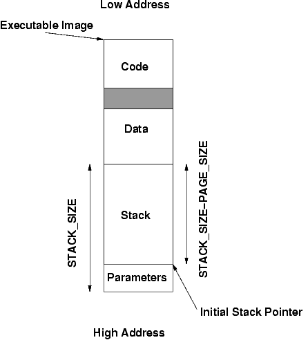
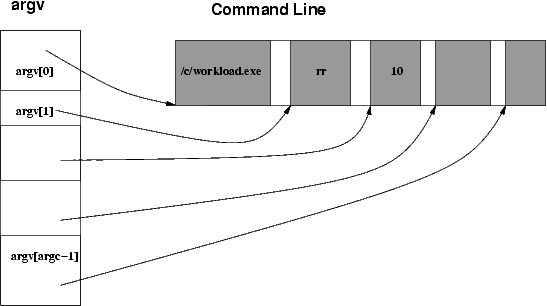

Due Friday, March 12th, 2004 (5:00 PM)
The main purpose of this project is to add a new scheduling algorithm
to GeekOS and to implement a simple synchronization primitive (semaphore).
As you might have already noticed, GeekOS uses a simple
priority based preemptive Round Robin algorithm. In this project, you
will change this to a multilevel feedback scheduling. In addition,
you will provide user programs with semaphores, a means to check
the system's current time and a mechanism for passing command-line arguments.
In this, and other projects, you will rely heavily upon a list data structure. For this reason an implementation has been provided to you in list.h file. Please familiarize yourself with its syntax and functionality. It could be a little tricky to understand the syntax since functions are written using #define. Naturally you are always free to extend, modify, or write your own implementation that would better suit your needs.
The most important part of this project includes augmenting the existing GeekOS Round Robin scheduling algorithm with a multilevel feedback scheduler (MLF). In Round Robin, all threads sit in a FIFO queue. In the MLF which you will implement, you will use 4 queues instead of one. Each queue is assigned a priority level, i.e. all threads in the same queue have the same priority. The queues will be numbered 0 through 3, with 0 being the highest priority, and 3 being the lowest. This will require changing s_runQueue from being a struct to being an array of structs, one for each priority level.
You might want to review section 6.3.6 pp 167 in the textbook. Note however that in our case the quantum is identical for all four queues.
A newly created thread will be placed on the highest priority queue (i.e., 0). Each time a thread completes a full quantum, it will be placed on the ready queue with the next lowest priority, until it reaches priority 3, at which point it can not go any lower. Hence, CPU-intensive threads will be eventually placed on the lowest priority queue. If the thread is blocked, the priority level will be increased by one, until after blocking three quanta in a row it will be back to priority 0. To schedule a thread to run, look at the head of the highest priority queue. If there is a thread pointer there, return it as the thread to be run. If not, go to the next lowest priority queue, and keep repeating until you find a thread. Scheduling always attempts to look at the highest priority queue and work down. This may mean low priority processes are starved.
The choice of which scheduler to use should be made within the function Get_Next_Runnable(). Any function that calls Get_Next_Runnable() should be unaware of which scheduling algorithm is being used (i.e., do not try to pass the scheduling type as an argument). It should only be aware that some thread has been selected.
You will need to handle the case of the idle thread specially. It should be placed on the lowest level queue and should never be permitted to move out of that level.
Your operating system should be able to switch which scheduling algorithm is being used via a system call, and the system call int Set_Scheduling_Policy(int policy, int quantum) should be implemented. If the value of policy is SCHEDPOLICY_RR (see syscallnos.h), the system should switch to round robin scheduling, if the policy is SCHEDPOLICY_MF, the system should switch to MLF. Other values of this parameter should result in an error code being returned (i.e. a -1 return value). The value of the quantum parameter should be the number of ticks that a user thread may run before getting removed from the processor. To implement the tunable quantum, you should change the constant MAX_TICKS in timer.c to be a global variable (whose default value is MAX_TICKS) that is set by this system call. Allowed values for the quantum are integers in the interval [2,100]. This will prevent the OS from switching too often (too low quantum) or starving other runnable processes (too high quantum).
You might want to look at the scenarios to better understand how you should implement MLF.
Note: When the system boots up, it will have to use MLF. So don't forget to set MLF as the initial scheduler.
You will add system calls that provide user programs with semaphores, to
enable thread synchronization among different threads.
The systems calls will be:
int Init_Semaphore(char *name, int initval)
int P(int sid)
int V(int sid)
int Finish_Semaphore(int sid)
Note: the kernel side of these operations needs to be implemented in an atomic manner.
Init_Semaphore(name, initval) is a request by the current thread to use a semaphore. A thread can not call P() or V() unless it calls Init_Semaphore(). The user gives a name for the semaphore, as well as the semaphore’s initial value, and will get back a semaphore ID, an integer between 0 and N - 1. Your operating system should be able to handle at least 20 (thus N = 20)semaphores whose names may be up to 25 characters long. If there are no semaphores left (i.e., there were 20 semaphores with unique names already given), -1 must be returned indicating an error.
In your kernel function Sys_Init_Semaphore, you will check if another thread has made this system call with the same name. If so, you must return back the semaphore ID (SID) associated with this name. The parameter initval is ignored in this case. The SID value returned will allow the calling thread to tell the kernel which semaphore it wants to use later. You also need to add this SID to the list of semaphores the calling thread can use, as well increment the count of registered threads which are permitted to use the semaphore. So, for each thread you have to store the list of semaphore IDs it can use, and for each semaphore, you will store the number of threads using it. (This will be used as a reference count.)
If this is the first time Init_Semaphore has been called by the name passed in, then find an unused SID, and initialize the value of the semaphore variable to initval. Again, add the SID to the list of semaphores the current thread can use, as well as incrementing the semaphore’s count of authorized threads.
Whenever a thread calls P() or V(), the kernel will check if the thread has permission to make this call. It will do so by checking if the thread has the SID in its list of SIDs that it can access (which is why you needed to create such a list). If it is there, it will be allowed to execute P() or V(). If not, the kernel should return back -1.
Note that the integer passed to P() or V() is NOT a semaphore variable. It is a semaphore ID. The kernel will be able to associate the semaphore ID with the semaphore’s value. That way, a thread is not permitted to look at the value of the variable. When waiting on a semaphore operation, the thread may not use a busy wait. Instead, to block a thread, you can use the Wait function in the kernel. You will need to create a new thread queue for threads blocked on semaphore operations. The file thrqueue.h provides an implementation of a thread queue. You should look at kthread.h and kthread.c to see how it is declared and used. To wakeup one thread/all threads waiting on a given semaphore, you can use Wake_Up_One()/Wake_Up() from kthread.h.
You might want to review section 7.4.2 in the textbook, pp 203 which describes how to implement P (wait) and V (signal).
Finish_Semaphore(int s) will remove the passed semaphore from the list of semaphores the calling thread is allowed to use. It will also keep track of how many threads have references to the semaphore, and delete the semaphore from the table (i.e. mark is as an unused semaphore) when the last thread that can access this semaphore calls Finish_Semaphore() .
Note: when a thread exits, the kernel should automatically call Finish_Semaphore() on behalf of this thread, for all the semaphores it has in its list.
Note: in order not to clobber syscall.c with too much functionality, you might want to put your semaphore implementation in two new files sem.h and sem.c.
One way to compare scheduling algorithms is to see how long it takes a process to complete from the time of creation to the termination of the process. You will investigate these differences by implementing the Get_System_Time() syscall.
Get_System_Time() will return the value of the kernel global
variable g_numTicks. The variable is already implemented
in the kernel (see timer.h), you only need to implement the system call to read it.
You can use this system call in a user program to determine how much
time has elapsed while a thread was running. You can do this by calling
Get_System_Time() once at the beginning of the thread
(in the user code) and once at the end. You can calculate how long the
thread took to run, as well as when the thread first got scheduled (based
on ticks). Notice that there is no attempt to remove time spent by other
threads. For example, if your thread context switches out, then a second
thread runs, the second thread’s time during the context switch will be
included in the first thread’s total time. This is known as "wall clock"
time. One can also just calculate the time used by the thread itself.
This is called process time (or sometimes virtual time) but you do not need to
care about it in this project.
You will also need to extend your implementation to allow passing parameters to new processes. The string you pass to the kernel via the Spawn_Program system call in libuser.c will contain the whole command line (e.g. "/c/workload.exe rr 10"). The implementation in the kernel will need to separate the command line in order to extract the program name (e.g. "/c/workload.exe"). Parameters are separated by one or more spaces in the passed string. The spawn system call should cause the entire command line to be passed to the spawned process. This will require copying these values into the memory of the newly created thread. The easiest place to put these values is at the end of the memory of the user process. You can then decrease the stack pointer by one page so that it does not overwrite the arguments. The image below illustrates the layout of user process memory space.

In the new process, the Entry function will have to:

Note1: the maximum number of parameters is defined in libuser.h as MAX_ARGC (if you find more than MAX_ARGC, ignore them)
Note2: the total command line size should not exceed one page (PAGE_SIZE). Similarly to Sys_Print where you placed a '\0' to make sure the string is terminated, if the command line is longer than PAGE_SIZE you should terminate it.
Note3: It is strictly forbidden to introduce a new system call for recovering the command line arguments.
In the previous project you implemented a Wait system call using Join. As you might have noticed, Join simply calls Yield in a while loop. This is a form of busy waiting. Busy waiting is undesirable because it wastes CPU schedules that other threads could use. You can review section 7.4.2 in the textbook, pp 203 which describes busy waiting in the context of semaphore implementation.
In this project, you will modify the Wait system call to be blocking. To accomplish this, each thread will have a thread queue indicating who is currently waiting on it. The file thrqueue.h provides an implementation of a thread queue. You should look at kthread.h and kthread.c to see how it is declared and used. When the Wait system call is initiated, the kernel side, or Sys_Wait, will add the caller to the waiting thread queue of the thread indicated by pid and block. The Wait function in kthread.h should be used to block a process. Upon exit, a thread will use Wake_Up_One()/Wake_Up() from kthread.h to notify those who are waiting that it is finished.
As before, Wait should immediately return if no thread with the specified pid is found.
Since you need to have multiple processes running concurrently to test the functionality you will implement, your shell should be able to lanuch processes in background. In the shell we provided, if Spawn_Program was successful, the shell waits for the newly launched process to terminate by calling Wait(). You have to add background functionality to the shell in a manner similar to UNIX. Before spawning a program, you start at the end of the command line ('\n') and walk back until you hit a non-space character, and test whether it's an & or not. If it is an &, you don't do Wait(). Otherwise, you do.
Note: Make sure you set the end of the string you pass to Spawn_Program so that an eventual & is not passed further to Spawn_Program(), since the & concerns only the shell.
| Identifier | Kernel Function | User Function | Effect |
| SYS_SETSCHED | int Sys_Set_Scheduling_Policy(struct Interrupt_State* state) | int Set_Scheduling_Policy(int policy, int quantum) | if policy is SCHEDPOLICY_RR or SCHEDPOLICY_MF and
2 <= quantum <= 100
switch to that scheduler, setting MAX_TICKS accordingly;
else return -1 |
| SYS_GETTIME | unsigned long Sys_Get_Time(struct Interrupt_State* state) | unsigned long Get_Time() | return g_numTicks |
| SYS_INITSEM | int Sys_Init_Semaphore(struct Interrupt_State* state) | int Init_Semaphore(char *name, int initval) | if a semaphore with this name doesn't exist, create it and return its SID; if it exists, return its SID; note that SID must be >= 0 |
| SYS_P | int Sys_P(struct Interrupt_State* state) | int P(int sid) | might block
wait() semantics returns -1 if sid invalid or not initialized returns 0 on success |
| SYS_V | int Sys_V(struct Interrupt_State* state) | int V(int sid) | never blocks
signal() semantics returns -1 if sid invalid or not initialized returns 0 on success |
| SYS_FINISHSEM | int Sys_Finish_Semaphore(struct Interrupt_State* state) | int Finish_Semaphore(int sid) | never blocks
returns -1 if sid invalid or not initialized returns 0 on success |
The files we provided can be used to test your semaphores or scheduling algorithm:
% /c/workload.exe [algorithm] [quantum]
where algorithm can take any of the values rr or mlf
and quantum is the scheduling algorithm's quantum.
% /c/ping.exe &
% /c/pong.exe
In addition to the code, you should run several tests on the supplied application workload.exe, varying the quantum length as well as the two scheduling algorithms. At minimum try running the system with the inputs of:
% /c/workload.exe rr 2
% /c/workload.exe rr 100
% /c/workload.exe mlf 2
% /c/workload.exe mlf 100
In your proj3 directory add a file called INTERPRETATION listing the results, as well as explaining why the results occurred. This exercise is meant to let you consider the effects of quantum length and scheduling algorithms on the run of several processes. The proj3.tar.gz that you submit must include this file as well.